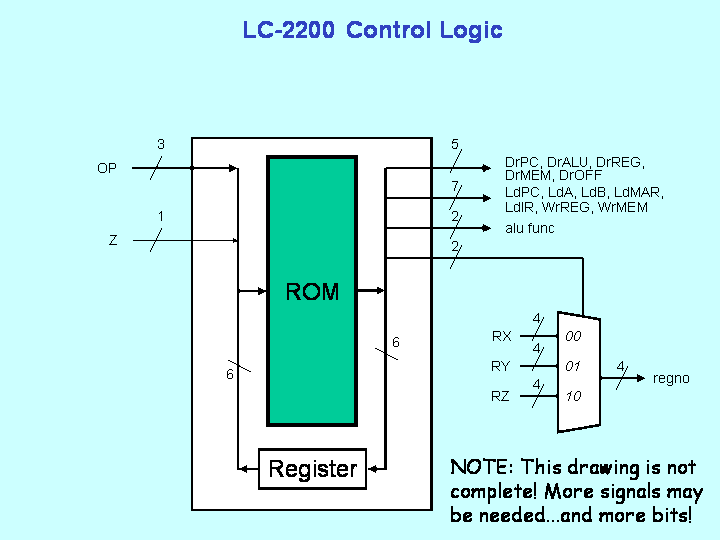

|
|
CS2200 Intro to Systems and Networks
|

Included in this project folder:
- prj1.html - You're reading it - contains the project description
- Assembler
- assemble16-win32.exe - a Windows-compiled HEX assembler to convert your assembly code to HEX for your RAM.
- assemble16-linux.c - source code for the HEX assembler for Linux and Mac users.
- README-assembler.txt - explaination of how assemble16-win32.exe works
- Standard Microcontroller - contains the files necessary for the standard portion of the project.
- fsmrom.exe - Windows-compiled version of the fsmrom
- fsmrom.c - source code for fsmrom (for Linux and Mac users)
- Makefile - Makefile for fsmrom.c
- example.fsm - An example of how you're supposed to write your microcode.
- README-standard.txt - explaination of how the compiler for the standard microcontroller works
- Bonus Mircocontroller - contains the files necessary for the bonus portion of the project.
- example.xml - An example of how you're supposed to write your microcode. The states in this file don't really exist, so don't use them.
- MICOCompiler.jar - translates your microcode into three HEX files
- MICOCompileSourceCode.zip - The source code for MICOCompiler.
- README-bonus.txt - explaination of how the compiler for the bonus microcontroller works
- Images
- lc2200datapath.png - image of the LC2200-16 datapath
- rom_fsm_control.png - image of the standard, one ROM microcontroller
- three_rom_contoller.png - image of the bonus, three ROM microcontroller
Project Overview:
Project 1 is designed to give you a good feel for exactly how a processor works. In Phase I, you will design a datapath to implement a supplied instruction set architecture. You will use the datapath as a tool to determine the control signals needed to execute each instruction. In Phases II and III you are required to build a simple finite state machine to control your computer and actually run programs on it.
Note: You will need to have a working knowledge of GT Logisim. Make sure that you know how to make basic circuits as well as subcircuits before proceeding. Also, make sure you have the most updated version of GT Logisim! It can be found here.
The assignment is broken up into three phases:
- Phase I:
- Understand the ISA
- Design and Implement the Datapath
- Phase II:
- Design and build your Microcontrol Unit
- Phase III:
- Write the control program.
- Convert to hex (with a supplied tool)
- Hook up the state machine and run your computer.
- Test and Debug
But first you need to see the detailed specification of the Instruction Set Architecture or ISA
The LC-2200 Instruction-Set Architecture
The LC-2200-16 (Little Computer 2200-16 bits) is very simple, but it is general enough to solve complex problems. (Note: This is a 16-bit version of the ISA specification you will find in the Ramachandran & Leahy textbook for CS 2200.) This section describes the instruction set and instruction format of the LC-2200. The LC-2200-16 is a 16-register, 16-bit computer. All addresses are word-addresses.
Although, the 16 registers are known as general purpose they are generally assigned special duties by software convention.
|
Reg# |
Name |
Use |
Callee Save? |
|
0 |
$zero |
always zero (by hardware) |
n.a. |
|
1 |
$at |
reserved for assembler |
n.a. |
|
2 |
$v0 |
return value |
no |
|
3 |
$a0 |
argument |
no |
|
4 |
$a1 |
argument |
no |
|
5 |
$a2 |
argument |
no |
|
6 |
$t0 |
temporary |
no |
|
7 |
$t1 |
temporary |
no |
|
8 |
$t2 |
temporary |
no |
|
9 |
$s0 |
saved register |
YES |
|
10 |
$s1 |
saved register |
YES |
|
11 |
$s2 |
saved register |
YES |
|
12 |
$k0 |
reserved for OS/traps |
n.a. |
|
13 |
$sp |
stack pointer |
no |
|
14 |
$fp |
Frame pointer |
YES |
|
15 |
$ra |
return address |
no |
Register 0: This register will always contain zero when read from. As an additional feature it may be written to in those cases where a value is not needed.
Note: For the purposes of this project, you must implement the zero register. Regardless of what is written to this register, it should always output zero.
Register 1: Although this is a general purpose register by convention, programmers should not use it. It may be used by the assembler when processing pseudo-instructions.
Register 2: Is designated as the register used to return values from functions.
Registers 3-5: Are designated to be used for passing arguments to functions.
Registers 6-8: Are designated for temporary variables.
Note: When calling a function the programmer should assume that the contents of registers 2-8 that were present when the call was made will no longer be valid. Thus, if needed after the call those values should be saved by the programmer calling the function.
Registers 9-11: These are saved registers.The caller of a function may assume that once the function returns the values that were in these registers before the call will still be there.
Note: This implies that a programmer writing a function that wishes to use these registers should first save them (most likely on the activation stack), then use them and then restore them before returning control to the caller
Register 12: This register is reserved for handling interrupts.
Register 13: The stack pointer which is used to keep track of the location of the top of the activation stack.
Register 14: This is the frame pointer discussed in the class and covered in the textbook. You can ignore it for this project.
Register 15: When a function is called the JALR instruction will save the address to return to and by convention this register is used for that purpose.
Instructions
There are 4 instruction formats (bit 0 is the least- significant bit).
R-type instructions (add, nand): bits 15-13: opcode bits 12-9: RX bits 8-5: RY bit 4: unused bits 3-0: RZ
I-type instructions (addi, lw, sw, beq): bits 15-13: opcode bits 12-9: RX bits 8-5: RY bits 4-0: offsetField (a 5-bit, 2's complement number with a range of -16 to +15)
J-type instructions (jalr): bits 15-13: opcode bits 12-9: RX bits 8-5: RY bits 4-0: unused (should all be 0)
S-type instructions (halt): bits 15-13: opcode bits 12-0: unused (should all be 0)
Symbolic instructions should follow the same layout. For
example, the add instruction is written in assembly as:
add<RX><RY><RZ>
------------------------------------------------------------------ Table 1: Description of Machine Instructions ------------------------------------------------------------------ Assembly language Opcode (binary name for instruction) Action (bits 15-13) ------------------------------------------------------------------ add (R-type format) 000 Add contents of RY with contents of RZ, store results in RX. format: add RX, RY, RZ ex: add $v0, $a0, $a1 nand (R-type format) 001 Nand contents of RY with contents of RZ, store results in RX. format: nand RX, RY, RZ ex: nand $v0, $a0, $a1 addi (I-type format) 010 Add contents of RY to contents of offset field and store result in RX. format: addi RX, RY, offsetField ex: addi $v0, $a0, 25 lw (I-type format) 011 Retrieves data from memory location [RY+offsetField] and loads that data into RX. format: lw RX, offsetField(RY) ex: lw $v0, 0x42($sp) sw (I-type format) 100 Retrieves data from RX and stores that data in memory location [RY+offsetField] format: sw RX, offsetField(RY) ex: sw $a0, 0x42($sp) beq (I-type format) 101 Compare the contents of RX and RY; if they are the same, then branch to the address PC+1+offsetField, where PC is the address of the beq instruction. format: beq RX, RY, offsetField ex: beq $a0, $a1, done jalr (J-type format) 110 First store PC+1 into RY where PC is the address of the jalr instruction. Then branch to the address now contained in RX. Note that if RX is the same as RY, the processor will first store PC+1 into that register, then end up branching to PC+1. format: jalr RX, RY ex: jalr $at, $ra halt (S-type format) 111 Halts the processor. ex: halt
Like many processors an assembler for the LC-2200-16 would supply a number of pseudo instructions:
noop - No operation: does nothing ex: noop (actually emits add $zero, $zero, $zero) .byte (pseudo-op) - fill word with a value. ex: .byte 32
The assembler supports labels which represent the address of the line. If a label is used in a beq instruction, it will evaluate to the relative offset.
Example: (address 0): add $s0, $zero, $zero (address 1): loop: addi $s0, $s0, -1 (address 2): beq $s0, $zero, end (address 3): beq $zero, $zero, loop (address 4): end: halt becomes (address 0): 000 1001 0000 0000 0 or 0x1200 (address 1): 010 1001 1001 11111 or 0x533F (address 2): 101 1001 0000 00001 or 0xB201 (address 3): 101 0000 0000 11101 or 0xA01D (address 4): 111 00000000000 00 or oxE000
Assignment Phase I
- Understand the ISA
- Design and Implement the Datapath
Learn how the datapath works

Figure 1: LC-2200 Datapath
The first thing you must do is to build your basic LC-2200-16 datapath. The basic operation of the datapath will be discussed in class. As you construct your datapath, build in as much functionality that will allow you to operate it "by hand" to allow you to experiment and test the operation.
We suggest your datapath might include devices to allow you to arbitrarily put a value on the bus as well as view the current value of the bus. Feel free to add any additional bells and whistles (maybe LEDs would be better) that you desire to help you understand what is going on.
Tips:
- You will have to build your own ALU. Recall that it must support A + B, A nand B, A-B and A+1.
- Logisim has single registers but doesn't have a register file. You can choose to either use a block of RAM to act as your register file or you can build your own. Remember that, in either case, you must make R0 ($zero) a zero register (i.e. no matter what attempt to load into that register, it should ALWAYS output "0").
Assignment Phase II:
- Design and Build the microcontrol unit
This semester, you have two choices for Phases II and III of this project. In Phases II and III, you will be building a microcontrol unit which will control all of the signal lines to the various parts of the datapath.
For standard credit, you will be building a very simple control unit that simply consists of a single ROM and a register. If you wish to do this, keep reading the next section. This is very similar to the class discussion and coverage in the textbook.
However, for an additional 10 possible points, you can choose to implement a three ROM microsequencer. This version of the microcontrol unit is a bit more complicated, but it is a MUCH more efficient use of total ROM space. If you want to do this, skip down to the "Bonus" section.
Note that, while the microcode does not change very much between the two versions, the format of how you need to write the microcode is different since we use two different programs to generate the HEX files that you will put into the ROM(s). See the README files in the respective folders for details.
Design and Build the Microcontrol Unit - STANDARD VERSION
SM control units may be implemented in a number of ways:
Combinational logic combined with a state element such as a
register may be used. Quite common in practice are microcode
designs where the information for each state is stored in a ROM.
For this project, we suggest a simple version of the microcode
approach. Examine figure 2.

Figure 2: Single-ROM Microcontrol Unit
This approach combines a ROM with a register. Operation is simple. The current state is stored in a register as a number. The bits from this register are combined with opcode bits, other bits from the datapath (e.g., Z register) and all together these bits form an address. The contents of that address are bits that are used to specify all control signals to the datapath as well as the number of the next state. The new state gets stored at the end of the clock cycle.
Before getting down to specifics you need to determine the control scheme for the datapath. To do this, examine each instruction, one by one, and construct a finite state bubble diagram showing exactly what control signals will be set in each state. Also, determine what are the conditions necessary to pass from one state to the next. Experiment with the supplied datapath to make sure that your logic is sound.
Once the finite state bubble diagram is produced, the next step is to encode the contents of the Control Unit ROM with a tool we are providing. Then you must design and build (in GT Logisim) the Control Unit circuit which will contain one ROM, a MUX, and a state register. Your design will be better if it allows you to single step and insure that it is working properly. Finally, you will load the Control Unit's ROM with the output of the tool.
Here is a table defining the bits you should use for your control logic:
Note: The control signals listed here are ever so slightly different than those in the Bonus version, so if you decide to switch versions, make sure you account for that.
Input Address to State Machine ROM Bit 0 lower bit State 1 2 3 4 5 higher bit state 6 lower bit opcode 7 8 higher bit opcode 9 lower bit cc (feel free to set to 0) 10 higher bit cc (feel free to set to 0) 11 Z State Machine ROM Contents Bit 0 lower bit State 1 2 3 4 5 higher bit State 6 DrREG 7 DrMEM 8 DrALU 9 DrPC 10 DrOFF 11 LdPC 12 LdIR 13 LdMAR 14 LdA 15 LdB 16 LdZ 17 WrREG 18 WrMEM 19 SelPR 20 RegSelLo 21 RegSelHi 22 ALULo 23 ALUHi RegSelHi RegSelLo Select Register Field 0 0 RX 0 1 RY 1 0 RZ 1 1 Unused ALUHi ALULo ALU Function 0 0 ADD 0 1 NAND 1 0 A-B 1 1 A+1
Design and Build the Microcontrol Unit - BONUS VERSION
If you choose to complete this version of the project, you can earn up to 10 bonus points
You will make a Microcontrol Unit which will drive control of the signal lines to the various items on the datapath.
FSM control units may be implemented in a number of ways: Combinational logic combined with a state element such as a register may be used. Quite common in practice are microcode designs where the information for each state is stored in a ROM.
As mentioned above, the simple, single-ROM solution has a lot of wasted space in the ROM since most of the microstates do not depend on the OP code or the Z register to determine which signals to assert. For example, since Z register is an input for the address, every microstate would have to have an address for Z = 0 as well as Z = 1, even though this only matters for one particular microstate.
To solve this problem, we will use a three ROM microcontroller. In this arrangement, we have three ROMs - the main ROM, which outputs the control signals, the sequencer ROM, which helps to determine which microstate to go at the end of the FETCH state, and the OnZ ROM, which helps to determine whether or not to branch during the BEQ instruction. See the following figure.

Figure 3: Three ROM Microcontrol Unit
As you can see, there are three different locations that the next state can come from - part of the output from the previous state (main ROM), the sequencer ROM, and the OnZ ROM. The mux controls which of these sources gets through to the state register. If the previous state's "next state" field determines where to go, neither the OPTest nor chkZ signals will be asserted. If the Op Code from the IR determines the next state (such as at the end of the Fetch state), the OpTest signal will be asserted. If the zero-detection circuitry determines the next state (such as in the BEQ instruction), the TestZ signal will be asserted. Note that these two signals should never be asserted at the same time since nothing is input into the "11" pin on the MUX.
Since we no longer consider the OpCode and zero detection as part of our input for the main ROM, the main ROM can be significantly smaller - more specifically, one address per microstate. The OpCheck ROM should have one address per instruction, and the OnZ ROM should have one address for taking the branch and one for not taking the branch.
NOTE: GT Logisim has a minimum of two address bits for a ROM (i.e. four addresses), even though only one address bit (two addresses) is needed for the OnZ ROM. Just ignore the other two addresses. You may want to do something so that the high address bit for this ROM is permanently set to zero.
Before getting down to specifics you need to determine the control scheme for the datapath. To do this examine each instruction, one by one, and construct a finite state bubble diagram showing exactly what control signals will be set in each state. Also determine what are the conditions necessary to pass from one state to the next. Experiment with the supplied datapath to make sure that your logic is sound.
Once the finite state bubble diagram is produced, the next step is to encode the contents of the Control Unit ROM with a tool we are providing. Then you must design and build (in GT Logisim) the Control Unit circuit which will contain the three ROMs, a MUX, and a state register. Your design will be better if it allows you to single step and insure that it is working properly. Finally, you will load the Control Unit's ROMs with the output of the tool.
Here is a table defining the bits you should use for your control logic:
Note: The control signals listed here are ever so slightly different than those in the Standard version, so if you decide to switch versions, make sure you account for that.
Input Address to State Machine ROM Bit 0 lower bit State 1 2 3 4 5 higher bit state State Machine ROM Contents Bit 0 lower bit State 1 2 3 4 5 higher bit State 6 DrREG 7 DrMEM 8 DrALU 9 DrPC 10 DrOFF 11 LdPC 12 LdIR 13 LdMAR 14 LdA 15 LdB 16 LdZ 17 WrREG 18 WrMEM 19 RegSelLo 20 RegSelHi 21 ALULo 22 ALUHi 23 OPTest 24 chkZ RegSelHi RegSelLo Select Register Field 0 0 RX 0 1 RY 1 0 RZ 1 1 Unused ALUHi ALULo ALU Function 0 0 ADD 0 1 NAND 1 0 A-B 1 1 A+1
Phase III
- Write the control program.
- Convert to hex (with a supplied tool)
- Hook up the state machine and run your computer.
- Test and Debug
Make sure that you are using the tools in the folder that correspond to the version of the project that you are completing.
- Write the microcode control program and convert it to a hex file suitable for loading into your control unit's ROM(s). See the README file in the appropriate folder (Standard or Bonus) for more information about the supplied conversion tools.
- Connect the Control Unit to the Datapath, load your control program into the Control Unit ROM(s), load a short test program into the RAM (See README-assembler.txt) and start running your computer. Some debugging may be necessary at this point. The easiest way to debug is to write simple assembly programs that test one particular instruction at a time.
- Turn in your completed datapath, your microcode (the .fsm file for the standard version or the .xml file for the bonus version) in plain text. Do not turn in the compiled HEX files. Your datapath file does not reliably save state in between closing and reopening the file, so if you do not turn in BOTH your datapath and your microcode file (.fsm or .xml depending), we will not be able to fully grade your project! Make sure your name and gtnumber, are visible on your datapath.
- Sign up for a demo timeslot. Watch for T-Square announcements and pay attention in class. You will be required to sign up for a demo time after the turn-in deadline for the project. At this demo, you will be asked questions to determine your level of understanding of the project material. Attendance at your demo time is mandatory.
End of Project 1 Spring 2011